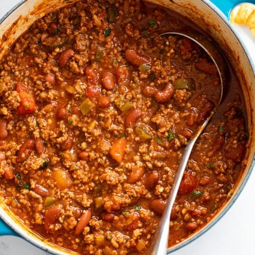

Chili

Description
Healthy turkey chili made with lean ground turkey, kidney beans and corn. This version is simply the BEST! Perfectly spiced and packed with plenty of protein and fiber. Can be made on the stovetop or in your slow cooker.
Ingredients:
- teaspoons olive oil
- 1 yellow onion, chopped
- 3 garlic cloves, minced
- 1 medium red bell pepper, chopped
- 1 pound extra lean ground turkey or chicken (99%)
- 4 tablespoons chili powder
- 2 teaspoons ground cumin
- 1 teaspoon dried oregano
- 1/4 teaspoon cayenne pepper
- 1/2 teaspoon salt, plus more to taste
- 1 (28-ounce) can diced tomatoes or crushed tomatoes
- 1 1/4 cups chicken broth
- 2 (15 oz) cans dark red kidney beans, rinsed and drained
- 1 (15 oz) can sweet corn, rinsed and drained